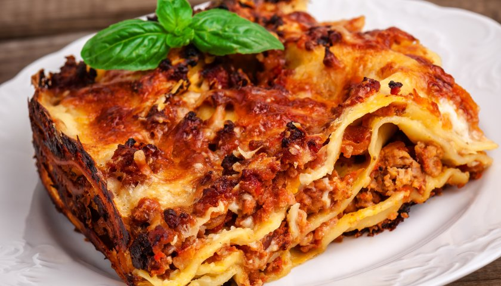

Lasagna

A massa de pastel é muito versátil e pode ser utilizada em inúmeras receitas. Neste passo a passo, você aprende a fazer uma deliciosa lasanha com massa de pastel. O recheio e o molho ficam a seu critério. A dica do chefe é rechear a lasanha com queijos como a mussarela e o parmesão. A cobertura é um saboroso molho branco. Conheça o modo de preparo completo e arrase nas suas receitas!
Ingredientes:
- 1 pacote de massa para pastel
- 650 gr de carne moída
- 1 unidade de cebola grande
- 1/2 unidade de pimentão vermelho em tiras
- 6 unidades de tomate sem pele e sem sementes
- 1 colher (sopa) de óleo de canola
- 3 colheres (sopa) de farinha de trigo
- 2 copos de leite
- 1 colher (sopa) de manteiga
- 2 caixas de creme de leite (procurar os mais grossos)
- 500 gr de mussarela
- Parmesão a gosto
- Sal a gosto
Como fazer:
- Refogue a carne moída, coloque o óleo numa panela, frite a cebola, o pimentão, coloque a carne, solte ela bem, deixe frigir. Coloque então o tomate, vá mexendo para não grudar. Quando fizer um caldo grosso, com o tomate tdo dissolvido, coloque 1/3 de xícara de água. Deixe ferver bem para engrossar. Reserve e deixe esfriar bem. Coloque o leite numa panela e deixe ferver com a colher de manteiga. à parte dissolva em mais meio copo de leite as 3 colheres de farinha de trigo. Despeje essa mistura no leite fervendo e faça um mingau, não muito mole. Deixe esfriar e coloque as caixas de creme de leite.
PARA MONTAR A LASANHA:
- Espalhe no fundo de uma forma retangular, um pouco do molho de carne moída.
- Coloque uma camada da massa de pastel; uma camada de creme branco; uma camada de carne moída, polvilhe com queijo parmesão, coloque mussarela por cima. De novo uma camada de massa de pastel, uma de creme branco, uma de carne moída, polvilhar com queijo ralado e cobrir de mussarela. Vá fazendo isso e termine com a mussarela. Geralmente dá 3 camadas. Coloque no forno quente até borbulhar bem. Bom apetite!